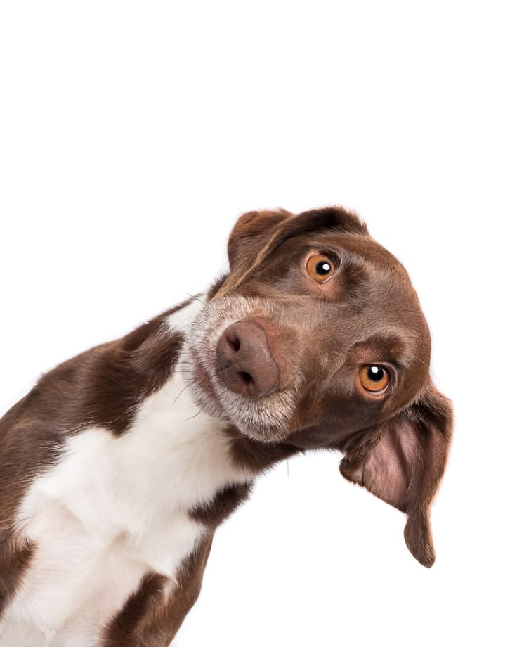

Ejemplo
Nube · Perro
Última vez visto: Parque Central, La Chorrera · Hoy, 8:00 a. m.
Pequeña, pelaje claro y collar amarillo.
Contacto de ejemplo
Revisa los reportes y ayuda a que cada mascota vuelva con su familia.
Última vez visto: Parque Central, La Chorrera · Hoy, 8:00 a. m.
Pequeña, pelaje claro y collar amarillo.
Contacto de ejemplo

Última vez visto: Barrio Colón, cerca de la escuela · Ayer, 6:30 p. m.
Blanco y negro, ojos verdes.
Contacto de ejemplo

Última vez visto: Residencial La Arboleda · Hoy, 10:15 a. m.
Marrón con pecho blanco; responde a su nombre.
Contacto de ejemplo
Avisa sobre maltrato, abandono u otras situaciones que afecten a un animal.
Nunca pedimos ni guardamos tu nombre, tu correo ni ningún dato que te identifique.
Tu denuncia se envió de forma anónima. No guardamos ningún dato que te identifique.